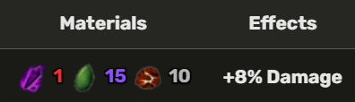

The Dark Blade can be obtained in the Blox Fruits Shop by buying it with 1200 Robux, trading something for it, or receiving it as a gift from another player.
Dark Blade Z Move
Dark Blade X Move
1. Go to the Blox Fruits Shop.
2. Look for the Dark Blade Gamepass.
3. Click on it to buy it.
4. Confirm your purchase to successfully obtain the Dark Blade.
To obtain Dark Blade V2, complete the **Son Quest**:
1. Talk to the Robotmega NPC in Middle Town.
2. Then talk to Indra (Doghouse) in Frozen Village.
3. Find 3 love letters hidden around the map:
4. Take them to Robotmega NPC. A message will appear:
"Something weird has occurred to your Dark Blade."
This means you have successfully obtained Dark Blade V2.
The player needs to talk to the Blacksmith to upgrade this sword:
